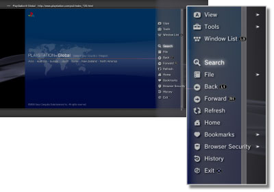
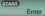

Network > Basic operation of the Internet browser
Basic operation of the Internet browser
Viewing the screen

(1) |
Page title |
|---|---|
(2) |
Page address |
(3) |
SSL icon |
(4) |
Busy icon |
(5) |
Browser security icon |
(6) |
Link target address |
(7) |
Pointer |
Scrolling methods
| Directional buttons | Move the pointer to a link. |
|---|---|
 button + directional button button + directional button |
Scroll by page. |
| Right stick | Scroll in the desired direction. |
Using the menu
Pressing the  button will display the menu, where you can perform various operations and settings. The menu can be displayed or hidden by pressing the button. Menu items differ in browse mode and window mode.
button will display the menu, where you can perform various operations and settings. The menu can be displayed or hidden by pressing the button. Menu items differ in browse mode and window mode.

Entering an address (URL)
When you press the START button, a keyboard will be displayed so that you can enter an address. If you select

after entering an address, the keyboard will close and the page associated with the entered address will open.Copying text
You can copy text from a page in the Internet browser.
1. |
Use the left stick to move the pointer to the location of the text that you want to copy, and then press the |
|---|---|
2. |
Hold down the |
3. |
Release the |
4. |
Select [Copy] from the menu that is displayed. |
Hints
- You can paste the text you have copied using the [Paste] button of the on-screen keyboard.
- If you select [Search] in step 4, you can perform an Internet search using the copied text as the keyword.
Printing a Web page
To use this feature, you must first set up a printer by selecting  (Settings) > [Printer Settings] > [Printer Selection].
(Settings) > [Printer Settings] > [Printer Selection].
1. |
Open the Web page that you want to print, and then press the |
|---|---|
2. |
Select [File] > [Print This Screen]. |
3. |
Check the print settings. |
4. |
Select [Print]. |
Hint
Printers that can be used vary depending on the country or region. For more information, visit the SCE Web site for your region.
Opening multiple windows
You can open multiple windows at the same time. With the pointer placed on the link, press and hold down the  button until the link opens in a different window.
button until the link opens in a different window.